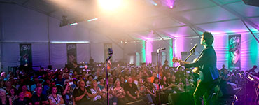
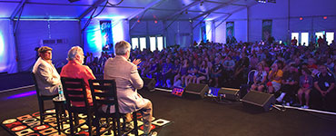

About Us
With 18 years of tradition in the musical environment, the Tribute Inc offers a service of extreme quality and affordable prices. Located in the South Zone of London, near the tube Chancery Lane, the studio has three rooms for rehearsals and
recording carefully treated with acoustic materials of first quality. His recordings are performed using digital and semi-analog methods, using the most modern audio software and plug-ins of today. For greater comfort of its clients, the
studio also has wi-fi internet, air conditioning, pool table, security cameras and plasma televisions with cable tv.

Our Mission
The Tribute Inc offers its customers excellent equipment such as microphones, PA system, amplifiers, battery and sound desk. In addition, it provides rental of instruments for internal use: guitars, bases and drums accessories. In addition
to the studio, the Tribute Inc is also a recording producer and label focused on the independent market, having promoted CS collections and various events. His field of action is vast, encompassing all musical styles.
Why are we different?
With the purpose of encouraging the artist to disseminate the musical culture, we operate with the best cost-benefit, added to a personalized service and an excellent quality in the services. Quality, low cost. 100% garantee. Technology, commitment
and professionalism. Honest service with transparent information. We turn up the volume and you release your sound. Schedule your rehearsal or recording session.